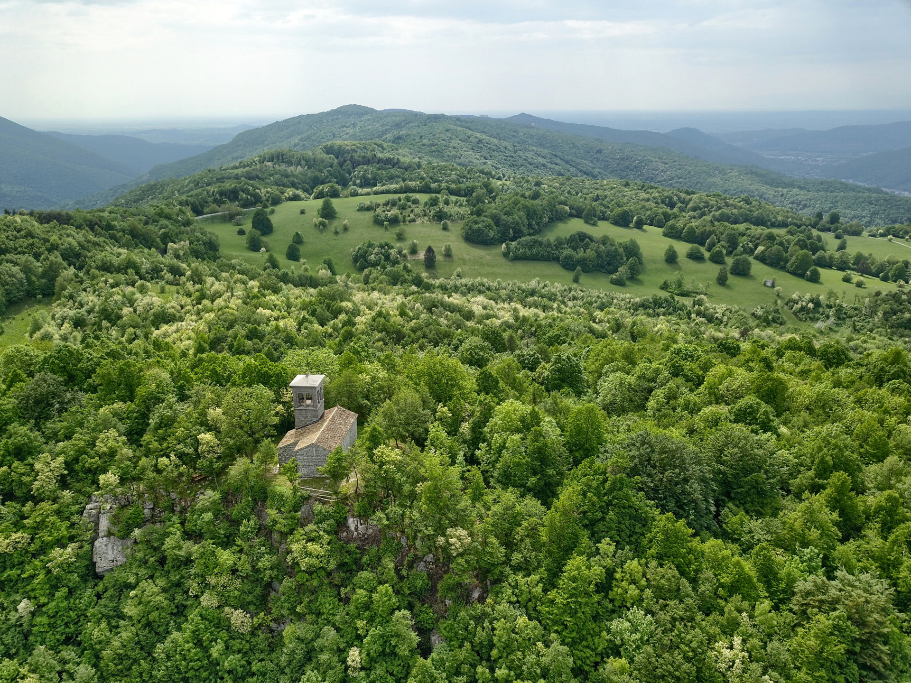

Attività di recupero dei terreni incolti ed abbandonati (LR 10/2010) a Stregna: risultati raggiunti e le prospettive
dott. Luca Postregna, sindaco di Stregna
www.asfoerbezzo.eu - info@asfoerbezzo.eu
@Ex scuola elementare di Stregna (FVG) - 21 novembre 2019

A chi si rivolge questa presentazione?

- ai cittadini che vogliono migliorare il paesaggio
- alle aziende agricole e forestali
Di cosa parleremo?

- Il recupero dei terreni incolti e gli indirizzi della giunta di Stregna
- I progetti di recupero conclusi
- Prospettive progettuali per il 2020-2021
LR 10/2010
Interventi di promozione per la cura e conservazione finalizzata al risanamento e al recupero dei terreni incolti e/o abbandonati nei territori montani.
tempi di attuazione della LR 10/2010

- 1-2 anni: intervento di recupero
- + 5 annate agrarie: mantenimento a prato
la concessione in affido

- volontaria, adesione dell'avente titolo
- amministrativa, imposizione del comune
gli indirizzi della giunta di Stregna n. 67/2019
regoliamo la concessione di contributi ai soggetti che si assumono l'onere dell'intervento di recupero ed il mantenimento a prato pascolo
Art. 1 - finalità

- prevenzione incendi
- prevenzione animali nocivi (zecche, ecc.)
- stimolare imprenditoria agricola
- recupero del paesaggio e della biodiversità
Art. 2 - definizioni
- area d'intervento
- soggetto/i operatore/i
- soggetto/i manutentore/i
Art. 3 - Indicazioni operative
- rimozione ceppaie per pendenze minori del 20%
- altezza max 50cm, rapporto diametro/altezza 2:1
- soggetti arborei adulti o di pregio, max 20/ettaro
- salvaguardia piante monumentali e da frutto
- attività devono concludersi tra giugno e settembre
Art. 4 - Proposta area intervento e modalità richiesta contributo
- il tecnico forestale è individuato dal soggetto operatore
- progetto (cartografia + tabella descrittiva: superficie, pendenza, stato di abbandono, titolo)
- eventuale accordo tra più soggetti operatori e/o manutentori
Art. 5 - Accettazione aree d'intervento
- approvazione in giunta del progetto
- il comune richiede ed ottine il contributo regionale
- determina di impegno di spesa nei confronti dei beneficiari
Art. 6 - Conclusione delle operazioni d'intervento
- entro il 31/9, chiusura interventi
- eventuale rinuncia su porzioni di superfici
- verifiche a campione del tecnico comunale
- determina di liquidazione nei confronti dei beneficiari
- entro il 10/11 (anno+1?), il comune chiude gli interventi nei confronti della Regione FVG
Art. 7 - Contributi per le operazioni di mantenimento a prato-pascolo
- il comune chiede alla Regione FVG contributo per mantenimento ed impegna ai beneficiari
- entro il 30/9, il soggetto manutentore comunica il termine delle operazioni al comune
- determina di liquidazione ai soggetti beneficiari
- verifiche a campione fa il corpo forestale
Art. 8 - Entità e modalità di rilascio del contributo
Per l'intervento:
- euro da 3500 a 8000 a ettaro
- euro 150/ettaro per spese tecniche
Per il mantenimento:
- euro 500/ettaro/anno per 5 anni, +PSR, + ...
Art. 9 - Impegni del soggetto operatore e del soggetto manutentore
- ripristino viabilità danneggiata
- salvaguardia prati stabili
Art. 10 - Subentro di soggetto operatore e soggetto manutentore
- Si stabilisce che in ordine agli impegni assunti dal soggetto operatore e dal soggetto manutentore, è possibile il subentro nell’impegno nei confronti del comune da parte di soggetti terzi
Art. 11 - Accordi particolari tra comuni e beneficiari
- per operazioni di controllo
- per ulteriori operazioni (muretti a secco, viabilità agricola, sentieri, ...)
Art. 12 - Modifiche agli indirizzi sono retroattive
Art. 13 - Allegati
- bozza domanda di contributo
- bozza termine operazioni d'intervento e richiesta mantenimento
- bozza comunicazione termine annuale di mantenimento
LR 9/2007: riconosce le associazioni fondiarie
LR 9/2007 art. 86bis: associazioni fondiarie

LR 9/2007 art. 86bis: associazioni fondiarie

LR 9/2007 art. 86bis: associazioni fondiarie

Il recupero dei terreni incolti ed abbandonati a Stregna: gli obiettivi raggiunti
| anni | '15 - '18 | '16 - '19 | '17 - '19 | |
| asfo | 1.4 | 7.4 | 3.7 | 12.5 |
| 5 privati | 10.2 | 3.5 | 13.7 | |
| totale | 11.6 | 10.9 | 3.7 | 26.2 ettari |
|---|
Quali sono le prospettive?
- piani di gestione aree recuperate (c'è la lr 9/2007...)
- ampliare recupero dei terreni incolti
...ma anche
- gestione dei prati a sfalcio
- gestione selvicolturale + PEFC
- viabilità forestale (PSR + LR 9/2017 art. 35)
- progetti mirati (castanicoltura tradizionale in chiave turistica, recupero paesaggio terrazzato, ...)
Costi progettuali:
- 200€/ha +2% - 3 ha comprensivo valutazione legna, pagamento 100%
- 150€/ha +2% + 3 ha pagamento 50% + 50%
- 50€/ha +2% quantificazione legname cippato/adulte
perchè aderire?
- si assume l'onere preliminare della valutazione della legna adulta
- organizza le operazioni di intervento di recupero
- si assumene l'impegno del mantenimento a prato pascolo
scadenze:
- 17.12.2019 per nuove adesioni all'asfo erbezzo
- 27.12.2019 per consegna nuovi progetti d'intervento dai soggetti operatori al comune
- 01.01.2020 il comune inoltra la domanda di finanziamento alla regione
Ci sono persone che intendono aderire all'ASFO Erbezzo?
Ci sono altri privati che intendono promuovere progetti di recupero degli incolti?
Come seguire le nostre attività?
Grazie per l'attenzione - Interventi
dott. Luca Postregna, sindaco di Stregna
www.asfoerbezzo.eu - info@asfoerbezzo.eu
@Ex scuola elementare di Stregna (FVG) - 21 novembre 2019